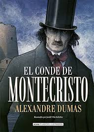

Sipnosis:
Entre la boda de José Arcadio Buendía
con Amelia Iguarán hasta la maldición
de Aureliano Babilonia transcurre todo un siglo.
Cien años de soledad para una estirpe única,
fantástica, capaz de fundar una ciudad
tan especial como Macondo y de engendrar niños
con cola de cerdo.
Sipnosis:
Bruno, de ocho años, es el hijo mimado de
un oficial nazi. Al ascender a su padre,
la familia se ve obligada a abandonar su
confortable casa de Berlín y trasladarse a
una zona aislada. Allí conoce a Shmuel,
un chico de su edad que vive una extraña
y paralela existencia al otro lado de
una alambrada.

Sipnosis:
El conde de Montecristo es uno de los clásicos
más populares de todos los tiempos. Su publicación,
en 1844, no ha dejado de seducir al gran público
con la inolvidable historia de su protagonista.
Sipnosis:
En los doce relatos recogidos en este libro,
Sherlock Holmes despliega toda su genialidad y
potencial de razonamiento y, junto a Watson,
forman una de las parejas más célebres de la ficción.